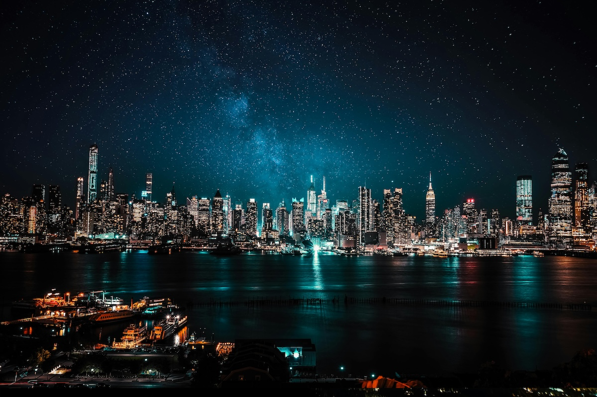

Gece Fotoğrafçılığı: Harika Kareler Çekmek İçin İpuçları ve Teknikler
Gece fotoğrafçılığı, fotoğrafçıların ışığın az olduğu koşullarda yaratıcılıklarını sergilediği bir sanat dalıdır. Yıldızlı gökyüzünden, şehir ışıklarına kadar birçok ilham verici konu gece çekimlerinde hayat bulur. Bu rehberde, gece fotoğrafçılığı hakkında detaylı bilgiler ve en iyi kareleri yakalamak için ihtiyaç duyacağınız ipuçlarını bulabilirsiniz.
Gece Fotoğrafçılığı Nedir?
Gece fotoğrafçılığı, gün batımından sonra veya ışığın doğal olarak az olduğu saatlerde yapılan fotoğraf çekimlerini kapsar. Bu tarz fotoğraflarda, düşük ışık koşullarına uygun ekipman ve doğru ayarlarla etkileyici sonuçlar elde edebilirsiniz. Özellikle yıldız fotoğrafçılığı ve ışık izleri gibi özel teknikler, gece fotoğrafçılığını benzersiz kılar.
Gece Fotoğrafçılığı İçin Gerekli Ekipmanlar
Gece çekimlerinde başarılı olmak için doğru ekipmanlara sahip olmanız önemlidir. İşte önerilen bazı ekipmanlar:
- Tripod: Uzun pozlama gerektiren gece çekimleri için sabit bir platform sağlar. Sağlam ve hafif bir tripod tercih edin.
- Hızlı Lensler: Geniş diyafram açıklığına sahip lensler (örneğin, f/1.8 veya f/2.8) daha fazla ışık alarak daha iyi sonuçlar verir. Ayrıca, geniş açı lensler yıldızlı gökyüzü çekimleri için idealdir.
- Uzaktan Deklanşör: Kamerayı elle tetiklemek yerine titreşimsiz çekimler yapmayı sağlar. Alternatif olarak, kamera zamanlayıcısını kullanabilirsiniz.
- Ekstra Batarya ve Hafıza Kartları: Gece çekimleri uzun sürebileceği için yedek batarya ve hafıza kartları bulundurmak önemlidir. Soğuk havalarda bataryaların hızlı tükenebileceğini unutmayın.
- Fener veya Baş Lambası: Çekim sırasında çevrenizi görmek ve ayar yapmak için kullanışlıdır. Kırmızı ışık moduna sahip bir fener, gece görüşünüzü koruyabilir.
- ND Filtreleri: Özellikle ışık kirliliğinin yoğun olduğu yerlerde daha uzun pozlamalar için faydalı olabilir.
Gece Fotoğrafçılığı Teknikleri
Başarılı gece fotoğrafları çekmek için bazı teknikleri bilmek önemlidir. İşte en önemli yöntemler:
- Manuel Modu Kullanın: Gece çekimlerinde kameranızı manuel moda alarak kontrolü elinize alın. ISO, diyafram ve enstantane hızını kendiniz ayarlayarak istediğiniz sonuçları elde edebilirsiniz.
- ISO Ayarları: Gece fotoğrafçılığında ISO genellikle daha yüksek değerlere çıkarılır. Ancak, çok yüksek ISO ayarları görüntüde gürültüye neden olabilir. Dengeli bir ISO seviyesi seçmek önemlidir (örneğin, 800-3200 arası). Gürültüyü azaltmak için gelişmiş düzenleme yazılımlarını kullanabilirsiniz.
- Uzun Pozlama: Uzun pozlama, ışık izleri, yıldız döngüsü veya sakin su yüzeyleri gibi etkileyici görüntüler yaratmanızı sağlar. Tripod kullanarak sabit bir çekim yapabilirsiniz. Pozlama süresi genellikle 15 saniye ile birkaç dakika arasında değişebilir.
- Doğru Beyaz Dengesi: Gece ışıkları genellikle farklı renk sıcaklıklarına sahiptir. Sokak lambaları genellikle sıcak tonlarda olurken, LED ışıklar daha soğuk bir tona sahiptir. Beyaz dengesini manuel olarak ayarlayarak renklerin doğal görünmesini sağlayabilirsiniz.
- Odaklama: Düşük ışık koşullarında otomatik odaklama zor olabilir. Manuel odaklama yaparak net sonuçlar alabilirsiniz. Lensinizdeki “sonsuz odak” ayarını kullanmayı deneyin ve canlı ön izleme (live view) ile netlik kontrolü yapın.
- Işık Kirliliğini Yönetme: Işık kirliliği gece çekimlerinde büyük bir engel olabilir. Daha karanlık alanlar seçmek veya ışık kirliliği filtreleri kullanmak bu sorunu minimize edebilir.
Gece Fotoğrafçılığı İçin İlham Veren Konular
Gece çekimlerinde üzerinde çalışabileceğiniz birçok ilginç konu vardır. İşte bazı öneriler:
- Yıldızlı Gökyüzü ve Samanyolu: Samanyolu fotoğrafçılığı için ışık kirliliğinden uzak yerler tercih edin. Astrofotoğraf uygulamaları ile yıldızların konumunu belirleyebilirsiniz.
- Şehir Manzaraları ve Işıkları: Şehirlerin silüetleri ve ışıklandırmaları dramatik kareler sunar. Altın oranı kullanarak kompozisyonunuzu güçlendirin.
- Havai Fişek Gösterileri: Patlama anını yakalamak için düşük ISO, f/8 ve 2-5 saniye pozlama ayarlarını deneyin.
- Araç Işık İzleri: Yoğun trafik olan bir yolda uzun pozlamalarla etkileyici ışık izleri oluşturabilirsiniz.
- Portre Çekimleri (Gece ışıklandırmalarıyla): Sokak lambaları veya neon tabelalar gibi yapay ışık kaynaklarını yaratıcı bir şekilde kullanabilirsiniz.
Gece Fotoğrafçılığı İçin İpuçları
- Planlama Yapın: Çekim yapacağınız yerin ışık durumunu ve hava tahminlerini kontrol edin. Ayın evresine dikkat ederek yıldız fotoğrafçılığı için uygun zamanları seçin.
- Altın Saat ve Mavi Saat: Gün batımından hemen sonra ya da gün doğumundan hemen önce çekim yaparak atmosferik ışıklardan yararlanın.
- Deneme Yanılma Yöntemi: Ayarlarınızı sürekli olarak deneyerek en iyi sonucu elde edin. Pozlama süresi ve ISO gibi değişkenlerle oynayın.
- Hareketli Işıklarla Deney Yapın: Light painting (ışıkla boyama) gibi yaratıcı tekniklerle farklı sonuçlar elde edebilirsiniz. El feneri veya LED ışıklarla şekiller çizebilirsiniz.
- RAW Formatında Çekin: RAW formatı daha fazla düzenleme seçeneği sunar. Post prodüksiyon aşamasında renk düzeltmesi ve gürültü azaltma gibi işlemleri kolaylaştırır.
Sonuç
Gece fotoğrafçılığı, sabır ve pratik gerektiren bir türdür. Yukarıdaki ipuçları ve tekniklerle hem yeni başlayanlar hem de deneyimli fotoğrafçılar için ilham verici kareler yakalamak mümkündür. Unutmayın, gece çekimleri her zaman beklenmedik sonuçlar sunabilir. Denemekten ve yaratıcılığınızı konuşturmaktan çekinmeyin!